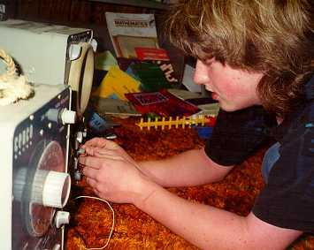

Hands-on Activities, Puzzles, & Games
that Don uses with students
An old Chinese proverb:
I hear and I forget,
I see and I remember,
I do and I understand
After watching my youngest son take apart radios and cars, after watching the videotape of Crick and Watson building a model of the DNA molecule and receiving a Nobel prize for that, I realized that young people need those kinds of experiences as they get older, and in mathematics as well!
Algebra-functions, and graphs (linear, non-linear)
The Tower Puzzle- The object is to move the tower of discs from one peg to another. The rules are: you can't put a bigger disc on top of a smaller one, you can only move one disc at a time, and later you will need to move the discs in the minimum # of moves. Don starts young people off with maybe only 3 discs. Then lets the student start with more.
The Math: an exponential function, positive and negative exponents, negative numbers with fractions, patterns in the table. It shows how the number of disks is related to the number of moves to move the disks to another peg. See Sheri's work with the Tower Puzzle. See there also, the 3D rotation of the graph of the Tower Puzzle.
(see
Ch.6)
The Peg Game or Shuttle Puzzle-leads to a quadratic function, a parabola (see
Ch.6)
Hinged Mirrors-leads to a quadratic function, an hyperbola (see Ch.6)
Algebra- solving equations
By guessing (see Ch.8)
Balance pictures (see CH.8)
Using iteration (see
CH.8a)
Geometry
Geometric transformations -the
fine Java applet by IES on Don's website, problems from Don's book "Changing
Shapes With Matrices" and Sheri's
work
Tessellations- using gummed shapes from Scotland, using M.C. Esher's ideas (see
Abe's work)
The Soma Cube-students make their own set from white Cuisenaire rods (see Olivia's
work, and Erin's 16 ways to make the cube)
M. C. Escher Kaleidocycles
Using Cuisenaire Rods
SA/Vol ratio of rods(Nanako's work) and
why rats are noctunal animals
Using single white rods to build patterns (see Ch 13)
Using the Fibonacci nos. to make a golden rectangle (chapter 7).
Study of the pentagon (Ch. 6)
Rectangles of constant perimeter,
Rectangles of constant area (ch.14)
The golden spiral from a pentagon (CH.7)
Start the binomial expansion (using squares
and cubes)
Number of routes between points...taxicab geometry
Following Archimedes to get Pi (Kohler's
work)
Find the slope of a ramp (or mountain,..)->slope of curves -> the
derivative (ch. 14)
Hinged mirrors & # of images vs angle (Michael's
work)
How lengths, squares and cubes grow (ch. 6)
Finding the area and perimeter of the snowflake curve (see
Emily's work)
How the Nautilus shell grows (ch. 6)
Similar shapes within the nautilus (ch. 6)
Using a Pantograph to enlarge Bugs Bunny by Roxana
and reduces a shell, by Sheri.
Rotogram- to see which angles are equal and to add angles of a polygon (from
Scotland)- see Anna's work
Volume Relationship Set- water poured into shapes to find the ratio of
the volume of
pyramid/volume of cube (see
Sheri's work, done 3 ways)
Area within shapes on a geoboard, leads to integral!- (see Ch.13)- also see Geoboard
Magic
Sticks and rubber bands (See NCTM "Readings in Geometry"; 1970; pp.
3-8).
Math from Bubbles
Graphs: linear, parabola, circle, ellipse, hyberbola, exponential
Polyominoes
Number
Dienes' Blocks for adding and subtracting in different bases
Magic number cards (tell someone's number, based on binary system) See Sheri and Kaitlin's
work.
Multiplying 12x13 using squares and strips, adding with a 5
year old ,
Square numbers, fibonacci
numbers, prime
numbers
Trigonometry
Oscilloscope and Oscillator- to show Sin waves and the addition of sin waves at right angles to get Lissajus figures (by Jonathan)

and by Ian, as a 4th grader, graphs sine waves at right angles to get a bowtie and a pretzel! And see the IES Java Applet showing all the 6 trig functions on one diagram!
Science->math
Racetrack (velocity and acceleration)
Measuring the length and resistance in a wire
Hinged Mirrors-light, reflection and images -leads to a quadratic
function, an hyperbola (see Ch.6)
SA/Vol ratio of rods and why rats are noctunal animals (see
Ch.6)
Math from
Bubbles
Miscellaneous puzzles and games
Nim
Sprouts
Conway's Game of Life
Chinese Ring Puzzle
Wooden Puzzles
Metal Puzzles
References
Martin Gardner's books
"Puzzles Old & New", by Slocum and Botermans